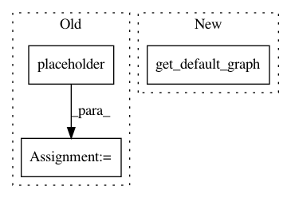

706a4e840607d50dc94249150366a23ba720a900,examples/deep_fqi_atari/extractor.py,Extractor,_build,#Extractor#Any#,65
Before Change
shape=[None, convnet_pars["height"], convnet_pars["width"],
convnet_pars["history_length"]],
name="target_prediction")
self._action = tf.placeholder("uint8", [None], name="action")
loss = tf.losses.sigmoid_cross_entropy(self._target_prediction,
self._prediction)
tf.summary.scalar("loss", loss)
After Change
def _build(self, convnet_pars):
with tf.variable_scope(self._name, default_name="deep_fqi_extractor"):
self._scope_name = tf.get_default_graph().get_name_scope()
self._x = tf.placeholder(tf.float32,
shape=[None,
convnet_pars["height"],
In pattern: SUPERPATTERN
Frequency: 3
Non-data size: 3
Instances
Project Name: AIRLab-POLIMI/mushroom
Commit Name: 706a4e840607d50dc94249150366a23ba720a900
Time: 2017-09-06
Author: carlo.deramo@gmail.com
File Name: examples/deep_fqi_atari/extractor.py
Class Name: Extractor
Method Name: _build
Project Name: analysiscenter/batchflow
Commit Name: 282be77642706e4b33dc62bd7edef039842103f0
Time: 2017-12-04
Author: a.kozhevin@analysiscenter.ru
File Name: dataset/models/tf/faster_rcnn.py
Class Name: RPN
Method Name: head
Project Name: tensorflow/transform
Commit Name: 97507c4871dff5fb5e4bd33d2f5cf3f8bd3aceba
Time: 2020-09-01
Author: varshaan@google.com
File Name: tensorflow_transform/analyzer_nodes.py
Class Name:
Method Name: bind_future_as_tensor